A primeira vez que te vi foi na casa do Paulinho,
num daqueles dias de chuva que parecem fazer parte
da vida no Huambo.
Entrei naquela casa sem imaginar absolutamente nada.
Estava apenas ali, entre brincadeiras, conversas e
aquela confusão normal de quando há várias pessoas juntas.
Até que te vi.
Naquele momento, não passou pela minha cabeça que um
dia serias alguém tão importante para mim. Não imaginei
que aquela pessoa que eu estava a conhecer naquele dia
acabaria por fazer parte de uma história que, anos depois,
eu estaria aqui a contar.
Na altura, eras apenas a Jacileth que eu tinha acabado
de conhecer.
Hoje, quando penso naquele momento, é engraçado perceber
que uma história tão importante para mim começou de uma
forma tão simples.
Eu vi-te pela primeira vez sem saber que, algum dia,
voltaria a olhar para esse momento de uma maneira
completamente diferente. 💙
02
Uma tarde de Cidade Dorme 🎭
Depois daquela primeira vez em que te vi,
voltaste para passar o fim de semana na casa
do Paulinho.
Naquela tarde, estávamos todos na sala:
eu, o Paulinho, a Jéssica, a Clarinha,
tu e a Edlândia.
Estávamos todos meio aborrecidos, sem saber
muito bem o que fazer, até que decidimos
jogar Cidade Dorme.
No desenrolar do jogo, a Clarinha acabou por
ficar com a personagem que tinha a função
de juntar duas pessoas.
E foi assim que, no meio daquela brincadeira,
ela acabou por nos "casar". 😂💙
Naquela altura, parecia apenas uma brincadeira
inocente. Eu nem imaginava que, algum tempo
depois, aquela memória teria um significado
tão diferente.
03
A noite do casaco 🧥
Quando anoiteceu, continuámos juntos e,
com o frio daquela noite, percebi que
estavas com frio.
Então decidi dar-te o meu casaco.
Eu estava muito tímido e, naquela altura,
ainda não suspeitava de nada. Para mim,
tudo aquilo parecia apenas uma brincadeira
inocente.
Quando chegou a hora de irmos para casa,
os primos começaram a provocar-nos:
"Então vais para casa sem dar um abraço?"
😂
Depois de tanta provocação, acabámos por
nos abraçar.
Naquele momento, pensei que aquele abraço
era apenas uma forma de agradecer pelo
casaco e de nos despedirmos.
Mas hoje, olhando para trás, percebo que
talvez já existissem pequenas pistas
de que havia algo entre nós. 💙
04
Uma conversa que mudou tudo 🌙
Depois de muito tempo sem nos vermos,
voltámos a encontrar-nos.
Foi a primeira vez que te vi de vestido.
Achei-te muito bonita, mas nunca tive
coragem de te dizer.
Ficámos a conversar durante muito,
mas muito tempo.
Quando começou a escurecer, os mosquitos
já estavam a incomodar-nos bastante,
então decidimos dar um passeio.
Fomos caminhando juntos, conversando,
perguntando coisas de que um gostava,
o que o outro não gostava e descobrindo
cada vez mais um sobre o outro.
E, durante aquele passeio, andámos
de mãos dadas como se já fôssemos um casal,
mesmo sem ainda termos nada.
Quando chegou a hora de voltares para casa,
eu não queria simplesmente despedir-me
e deixar aquele momento terminar.
Dessa vez, fui eu que tomei a iniciativa.
E abraçámo-nos. 💙
Foi talvez aí que comecei a perceber que
aquilo que existia entre nós não era apenas
uma brincadeira.
05
O reencontro de Agosto 💙
Depois de algum tempo sem te ver, chegou Agosto.
Tu estavas na casa da Cleusiana e da Cleusvana,
e eu nem fazia ideia de que estavas ali.
Naquele dia, saí com o Edi e o Dorilson.
Quando voltámos das compras, vi um grupo de meninas,
mas nem liguei muito e continuei o meu caminho.
Mais tarde, quando saí da casa do Edi para voltar
para casa, passei novamente pelo grupo.
Cumprimentei-vos, pensando que fossem colegas
da minha irmã.
Até que ouvi:
— Boa noite.
Aquela voz pareceu-me familiar.
Parei, tirei o capuz e olhei melhor.
Eras tu.
Depois de tanto tempo sem te ver, encontrar-te assim,
completamente por acaso, foi uma surpresa enorme.
Lembro-me daquele momento como uma mistura de
choque e felicidade.
Começámos a conversar e disseste-me que já estavas
ali há algum tempo e que estavas à procura da tia Elsa.
No dia seguinte, voltámos a encontrar-nos.
Depois disso, ainda apareceste mais algumas vezes
durante aquela semana.
E foi assim que, sem eu estar à espera,
voltámos a ficar perto um do outro.
Mal eu sabia que aquele reencontro seria o início
de uma semana que ainda tinha muita coisa
para acontecer entre nós. 💙
06
Quando todos começaram a perceber 🌙
Durante aquela semana de Agosto, houve um dia que ficou
especialmente marcado na minha memória.
Depois de finalmente encontrarem a tia Elsa, tu, as meninas,
o Paulinho e o Nuelvi acabaram por me chamar para vos acompanhar.
Fomos até ao parque.
E, naquele dia, tudo parecia diferente.
Ficámos ali durante bastante tempo, conversando e aproveitando
aquele momento. Tu encostaste-te a mim, eu fazia-te cafuné,
e parecia que, por alguns momentos, não existia mais nada
à nossa volta.
Lembro-me também de tu me mostrares algumas fotografias tuas
e das gémeas de quando eram crianças, além de algumas
fotografias tuas mais recentes.
Enquanto me mostravas aquelas fotos, eu ia conhecendo um pouco
mais de ti, vendo momentos da tua vida que eu ainda não conhecia.
Ficámos ali até tarde, por volta das 22 horas.
Até que a mãe da Cleusiana e da Cleusvana ligou a perguntar
por que ainda não tínhamos voltado.
E foi também nesse dia que começaram aquelas perguntas que,
na altura, me deixavam meio sem saber o que responder:
— Vocês já abriram o jogo connosco?
— Vocês namoram?
Nós dizíamos que não.
Mas, sinceramente, acho que toda a gente já conseguia
perceber alguma coisa.
A forma como ficávamos juntos, como nos tratávamos e aquele
jeito que tínhamos um com o outro já começava a dizer aquilo
que nós ainda não tínhamos coragem de dizer em voz alta.
E talvez tenha sido justamente por isso que aquele dia
ficou tão marcado para mim.
Porque, naquele momento, já não era só eu a perceber que
havia alguma coisa entre nós.
As pessoas à nossa volta também estavam a começar
a perceber. 💙
MOMENTO 07
O momento em que te abriste 💙
Depois de todos aqueles momentos daquela semana de Agosto,
chegou um dos dias que mais ficou guardado na minha memória.
As meninas continuavam a passar bastante tempo lá em casa,
e eu aproveitava cada oportunidade para estar perto de ti.
Mas, ao mesmo tempo, havia uma coisa que não saía da minha cabeça.
Eu já sabia o que sentia por ti.
O problema era que eu não sabia se tu sentias o mesmo.
E, por mais que eu tentasse disfarçar, comecei a perceber
que não queria continuar a guardar aquilo só para mim.
Então, num daqueles momentos em que ficámos mais afastados
dos outros, chamei-te para a varanda.
Eu estava nervoso, porque não sabia qual seria a tua resposta.
Podias dizer que não sentias o mesmo, e essa possibilidade
assustava-me bastante.
Mas mesmo com esse medo, decidi falar.
Disse-te que gostava de ti e perguntei se tu também sentias
alguma coisa por mim.
E foi aí que veio a resposta que eu mais queria ouvir:
tu disseste que sim.
Naquele momento, foi como se aquele medo que eu tinha
carregado até ali simplesmente desaparecesse.
Finalmente sabíamos que o sentimento era dos dois.
A partir daí, começámos a ficar ainda mais próximos.
Éramos aquilo que na altura chamávamos de
amigos especiais, ou até uma espécie de
amizade colorida.
Havia abraços, beijos e aquela proximidade que já não parecia
ser apenas amizade.
Só que, com o passar do tempo, comecei a perceber uma coisa:
para mim, aquilo já não era suficiente.
Eu não queria apenas ser alguém especial para ti.
Eu queria poder dizer que eras a minha namorada.
Queria que aquilo que sentíamos tivesse um nome,
tivesse um compromisso e fosse realmente nosso.
MOMENTO 08
Um encontro diferente 🎁
Depois daquela semana de Agosto, as coisas entre nós já não eram
exactamente como antes.
Eu já sabia que gostavas de mim e tu já sabias o que eu sentia
por ti. Mesmo assim, ainda havia muita coisa que estávamos a
descobrir um sobre o outro.
Algum tempo depois, voltámos a encontrar-nos, desta vez por
causa do teu aniversário.
Eu tinha preparado o teu presente de 16 anos e queria entregar-to
pessoalmente. Por isso, combinámos encontrar-nos.
Lembro-me de sair da escola e seguir contigo até à tua casa.
Pode parecer uma coisa simples, mas para mim aqueles momentos
contigo tinham sempre um significado diferente.
Caminhar ao teu lado, conversar contigo e simplesmente poder
estar contigo fazia-me perceber cada vez mais que aquilo que
sentia por ti estava a ficar mais sério.
Já não eras apenas alguém de quem eu gostava.
Estavas a tornar-te alguém que eu realmente queria ter
na minha vida.
E, mesmo sem sabermos ainda tudo o que estava por vir,
aquele encontro acabou por ser mais um daqueles pequenos
momentos que foram construindo a nossa história.
MOMENTO 09
As metadinhas — 13 de Fevereiro 💙
No dia 13 de Fevereiro, aconteceu uma daquelas coisas simples
que acabam por ganhar um significado enorme.
Comprei um colar de coração dividido ao meio.
Uma metade ficou comigo e a outra ficou contigo.
Era uma coisa simples, mas para mim representava muito mais.
Cada um tinha uma parte do mesmo coração.
Eu ainda guardo a minha metade até hoje.
E tu usaste a tua durante bastante tempo.
Talvez ainda a tenhas contigo.
No dia seguinte, 14 de Fevereiro, foste para a casa da tua mãe.
E, por mais estranho que pareça, foi aí que comecei a sentir
ainda mais a falta que tu fazias.
Estávamos longe outra vez.
E, desta vez, eu sentia ainda mais aquela distância.
Depois disso, passámos algum tempo sem nos vermos.
E só voltámos a encontrar-nos em Maio.
Mal eu sabia que esse reencontro seria completamente diferente
de todos os anteriores. 💙
MOMENTO 10
O reencontro — 9 de Maio 💙
Depois de tanto tempo sem nos vermos, chegou finalmente o dia
9 de Maio.
Tu chegaste e eu estava na casa do Edi. Até que o meu irmão
apareceu e disse:
— Adivinha quem chegou?
E depois:
— A Já veio.
Naquele momento, foi um choque.
O meu coração começou a bater mais rápido, mas eu tentei
fingir que estava tudo normal.
Até que a irmã do Edi ainda brincou dizendo:
— Hoje vai ter uma chuva de arroz.
Eu, entretanto, tinha de ir ao aniversário de um amigo.
Mais tarde, a Edilândia ligou porque o Paulinho não estava em
casa e precisavam de algumas cadeiras.
A Fina levou as cadeiras para baixo e eu também
saí para resolver outra coisa: fui ao alfaiate.
O meu casaco, aquele mesmo que tinha estado presente desde o
início da nossa história, tinha um rasgão e precisava de ser
cosido.
E foi no caminho que te vi.
Parámos para conversar.
Tu querias cumprimentar-me normalmente, mas eu deixei claro
que queria um abraço.
E abraçámo-nos.
Depois fui ao alfaiate, preparei-me para a festa e seguimos
para a casa do Paulinho.
Lá, fiquei a conversar contigo antes de
seguir de táxi para o aniversário.
Em determinado momento, perguntei-te se ficarias desconfortável
se eu te beijasse.
Tu estavas tímida porque havia outras pessoas por perto,
então respeitei o teu espaço.
Fui à festa, mas eu não conseguia deixar de sentir aquele
aperto no coração.
Afinal, depois de tanto tempo sem te ver, eu sabia que
aquele momento ia acabar demasiado depressa.
Eu até esperava dormir na casa do meu tio,
mas sabendo que estavas ali, já não queria ir para lá.
Eu ainda tinha esperança de que ficasses na casa do Paulinho,
e isso aconteceu.
Depois de tanto tempo à espera de te ver novamente,
finalmente tínhamos estado juntos outra vez.
Mas eu ainda não sabia que o dia seguinte seria muito mais
importante para nós. 💙
MOMENTO 11
10 de Maio — o dia que mudou tudo 💙
No dia seguinte, acordei tarde.
Acabei por nem ir à igreja e fiquei em casa a arrumar algumas
coisas e mexendo no telemóvel.
Até que a Edilândia ligou a pedir um carregador Type-C.
Peguei nele e fui levá-lo à casa do Paulinho.
E foi aí que te vi novamente.
Nós dois estávamos tímidos e meio nervosos.
Eu sentia que havia qualquer coisa diferente entre nós,
mas a tua timidez começou a deixar-me frustrado.
Mesmo assim, continuámos a conversar e a brincar um com o outro.
Aos poucos, fomos ficando mais à vontade.
Em determinado momento, a tia Elsa pediu-te para ires às compras
com o Paulinho.
Eu interpretei aquilo como se talvez não quisesses ficar comigo,
então saí.
Mas depois voltei.
Mais tarde, entraste no quarto do Paulinho para carregar o
telemóvel.
Quando me viste, tentaste sair por causa da timidez.
Eu chamei-te para ficares e sentares comigo.
Cheguei até a comentar com o Nuelvi que tu estavas muito tímida
e que aquilo estava a deixar-me um pouco irritado.
Depois, já lá em cima, continuámos a conversar.
Foi então que me perguntaste se eu ainda tinha a minha metade
do colar.
Eu disse que sim.
Tu pediste para eu tirá-la e mostraste a tua metade.
Juntámos as duas partes e tirámos uma fotografia daquele momento.
Eu até te pedi para me enviares a fotografia depois...
mas até hoje nunca a recebí. 😂
Como naquela época não tínhamos muitas oportunidades para
conversar e tu nem sequer tinhas telemóvel, começámos a fazer
perguntas um ao outro para manter a conversa.
A certa altura, perceberam que estavas na casa do Paulinho
e foram até lá.
Como estava muita gente lá em baixo, o Paulinho pediu para
todos subirem.
Nós tínhamos deixado as nossas metadinhas do colar em cima da
cama e só depois nos lembrámos delas.
Tu colocaste a minha metade em mim e eu coloquei a tua em ti.
Houve aquele momento de troca de olhares, cheio de timidez,
até que aconteceu um pequeno beijo.
Foi apenas um selinho, mas para mim significou muito.
Naquele instante, percebi que, apesar de toda a distância e
de todo o tempo que tinha passado, aquilo que sentíamos
continuava ali.
Depois descemos e ficámos a ver televisão e a conversar.
Quando começou a ficar escuro, as gémeas disseram que já estava
tarde e que tinham de ir embora.
Fomos acompanhá-las até casa e depois voltámos.
Lembro-me até de ter gravado um vídeo enquanto segurávamos
as mãos.
Mais tarde, na casa do Paulinho, jogámos Ludo.
E, claro, tu ganhaste.
Mas deixo aqui registado que eu deixei-te ganhar por pena.
Afinal, tenho de continuar a ser um cavalheiro. 😂
Tiráramos algumas fotografias engraçadas, brincámos e
continuámos a conversar.
Estávamos simplesmente bem juntos.
Passámos praticamente a tarde e a noite juntos.
Quando chegou a hora de irmos embora, já eram cerca das
22 ou 23 horas.
E foi antes de irmos embora que percebi uma coisa.
Aquilo que tínhamos chamado de amizade colorida já não era
suficiente para mim.
Eu queria mais.
Queria que aquilo fosse oficial.
Queria poder dizer que tu eras a minha namorada.
Então chamei-te para a varanda.
Agradeci-te por aquele tempo juntos e disse-te que, mesmo que
fosse por pouco tempo, eu queria aproveitar cada momento contigo,
porque nós raramente tínhamos a oportunidade de estar juntos.
E então fiz aquilo que já estava há algum tempo no meu coração.
Pedi-te oficialmente em namoro.
E tu aceitaste. 💙
Naquele momento, tudo mudou.
Já não éramos apenas dois amigos especiais que gostavam um do
outro.
A partir daquele dia, éramos oficialmente nós.
Quando cheguei a casa, olhei para o meu casaco e lembrei-me
de tudo o que aquele casaco representava na nossa história.
Por isso, voltei à casa do Paulinho e dei-to.
Naquela altura, talvez não tenha conseguido explicar-te
completamente o significado daquele gesto.
Mas para mim, aquele casaco já fazia parte da nossa história.
E até hoje ele continua contigo.
Assim terminou o dia em que aquilo que começou como uma
aproximação, uma amizade especial e tantos sentimentos
guardados finalmente se tornou oficial.
MOMENTO 12
E foi assim que começou o nosso nós 💙
Quando penso em tudo o que aconteceu até aqui, percebo que a
nossa história não começou num único momento.
Começou naquele primeiro olhar, nas conversas, nas brincadeiras,
nos encontros inesperados e em todos aqueles pequenos momentos
que, na altura, pareciam apenas momentos normais.
Depois vieram os sentimentos, a distância, a saudade, os
reencontros e aquele colar dividido ao meio que acabou por
carregar uma parte da nossa história.
E depois de tudo isso, chegou o dia 10 de Maio.
O dia em que finalmente deixámos de ser apenas duas pessoas
que gostavam uma da outra e passámos a ser oficialmente nós.
Talvez naquela altura eu ainda não soubesse tudo o que o futuro
nos reservava.
Mas uma coisa eu já sabia:
eu queria continuar a viver momentos contigo.
Porque, no fim, foram esses momentos simples que fizeram a nossa
história chegar até aqui.
E esta...
é apenas uma parte da nossa história.
Ainda temos muito para viver, muitas memórias para criar e
muitos capítulos que ainda nem sequer foram escritos.
Mas se eu pudesse voltar ao início e viver tudo outra vez,
escolheria novamente cada momento que me trouxe até ti.
Porque no meio de tantos caminhos possíveis,
o meu acabou por encontrar o teu.
E eu espero que continue assim por muito, muito tempo. 💙
12 momentos. Uma história. E ainda não acabou... 💙
Esta foi apenas uma parte de tudo aquilo que preparei para ti.
Ainda existe uma última parte desta surpresa à tua espera.
Algumas memórias 📸
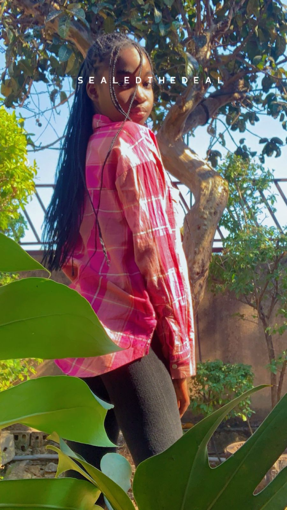
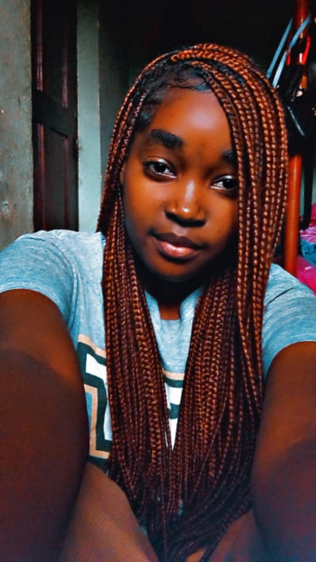
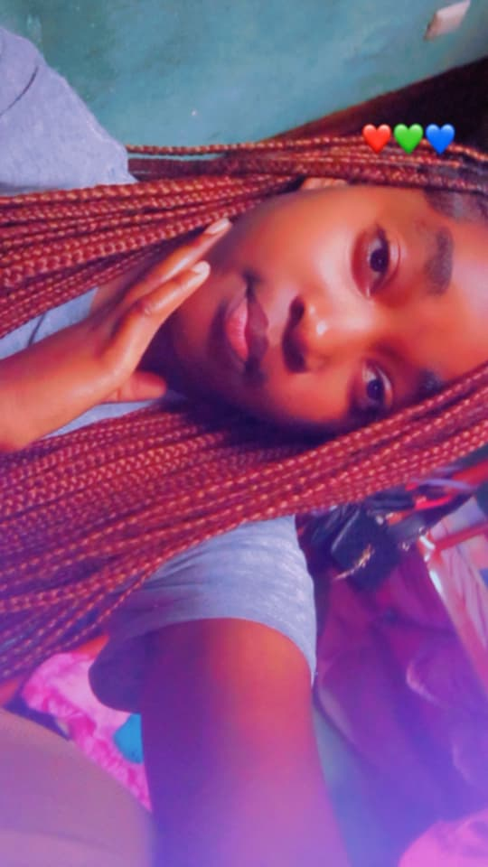
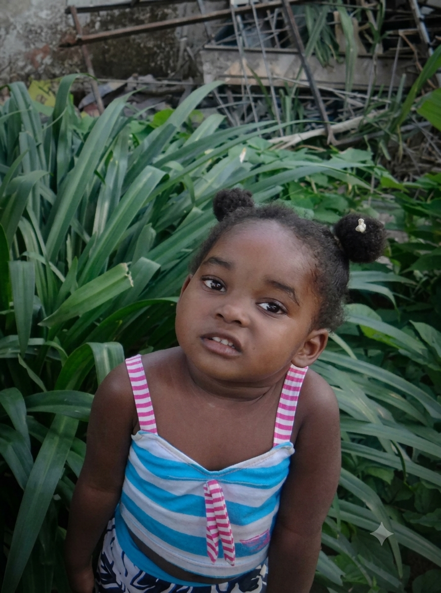
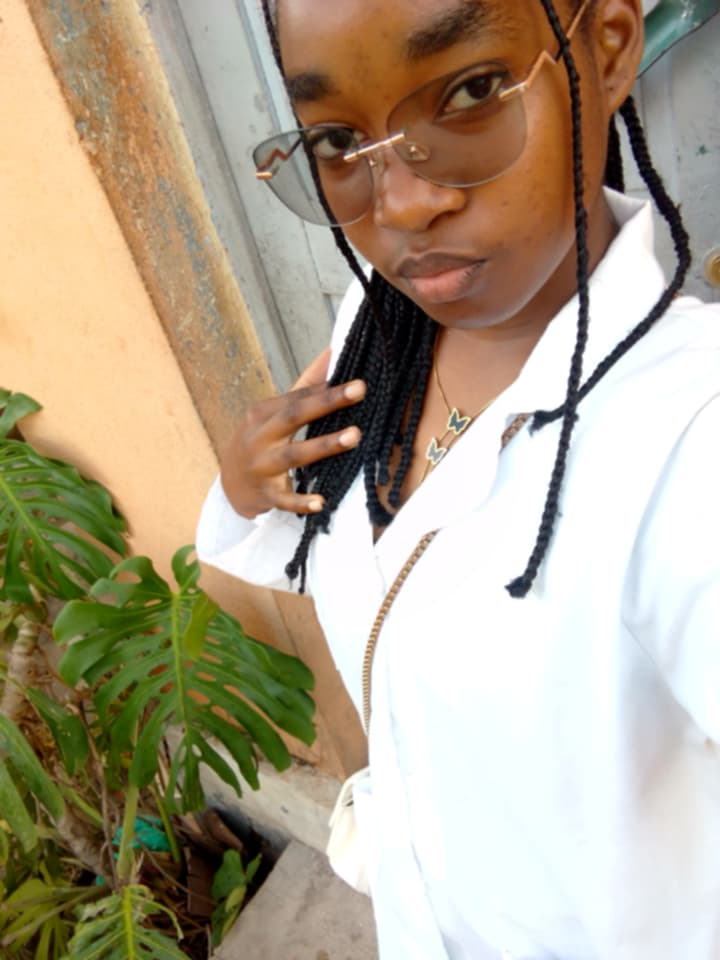
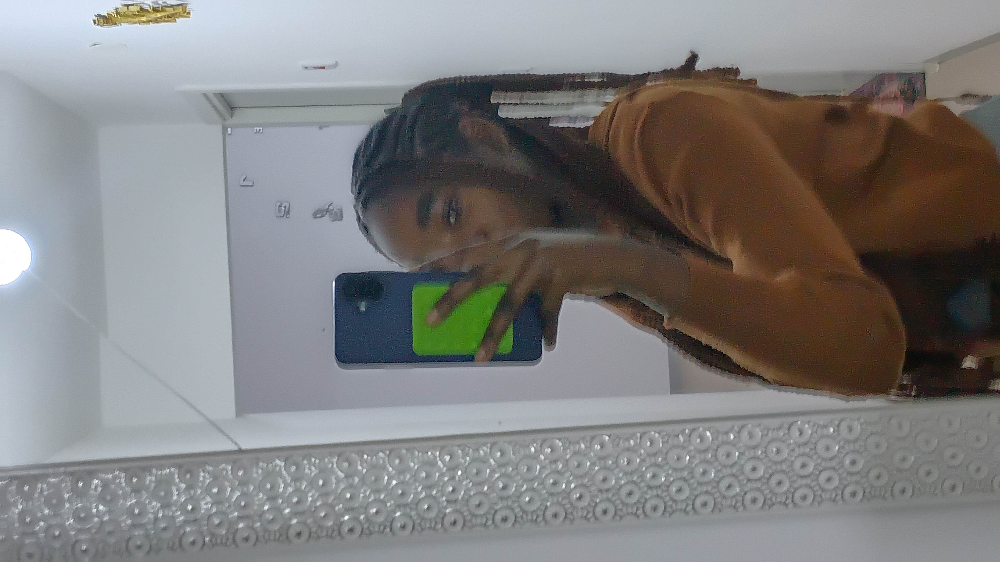
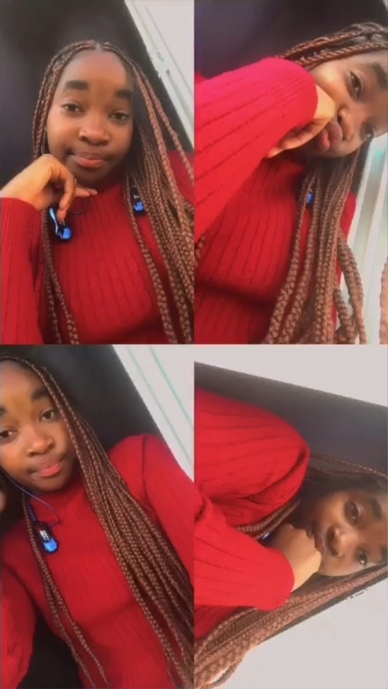
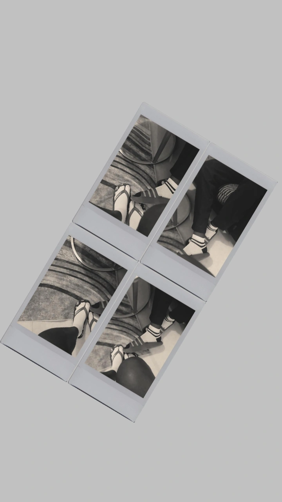
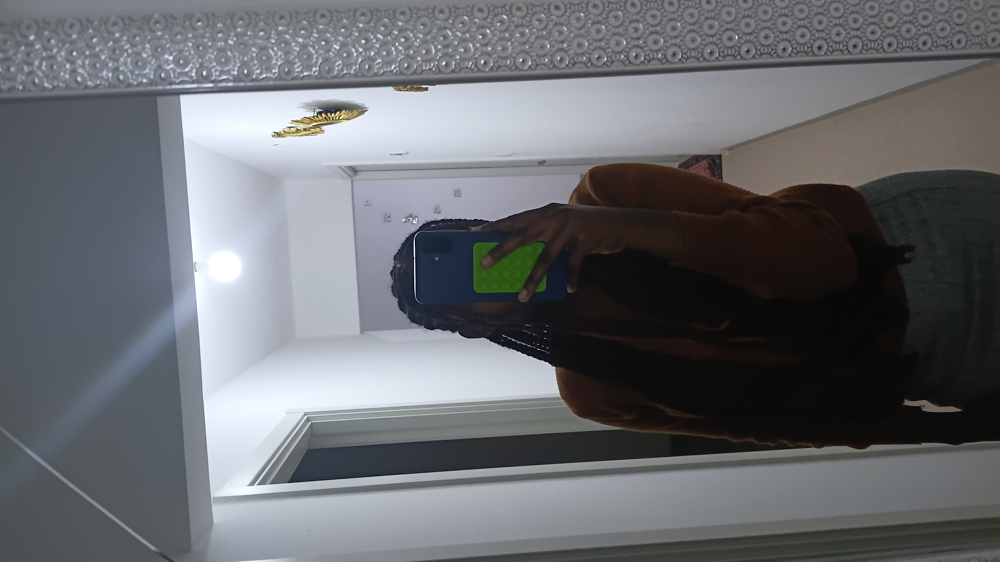
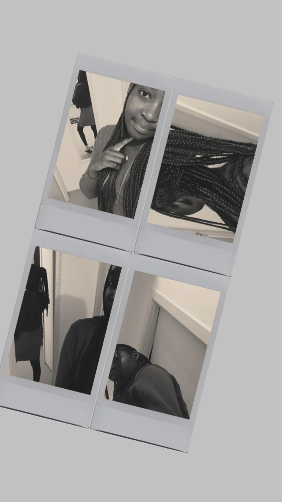
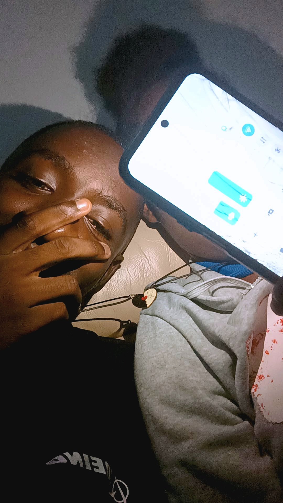
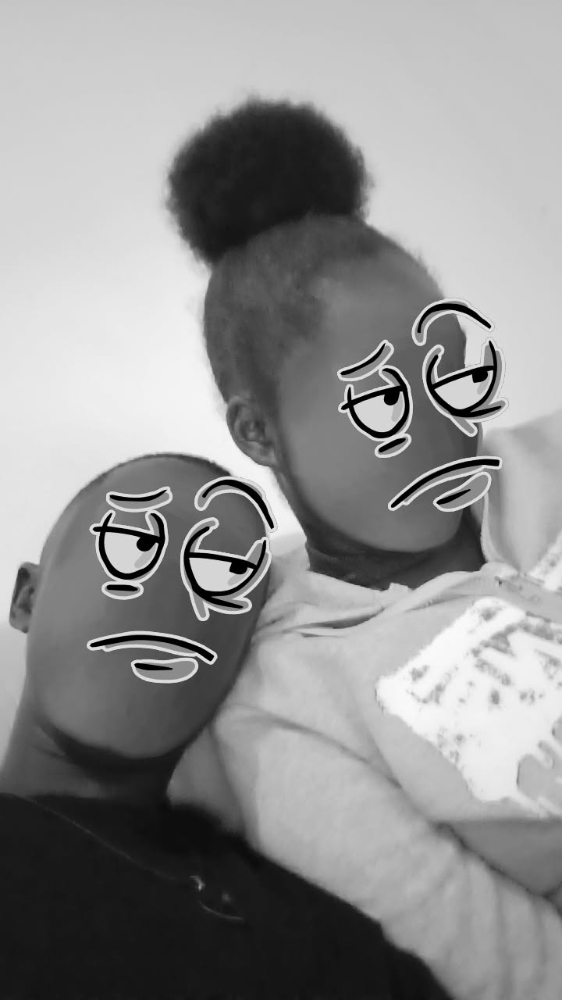
Agora é a tua vez... 💙
Sobre ti 🌷
Já falei um pouco da nossa história, mas faltava
falar de uma pessoa que tornou tudo isso especial:
tu.
Gosto de conhecer os teus pequenos detalhes.
A tua cor favorita, azul —
que, por acaso, também é uma das minhas. 💙
A tua artista favorita, Annick,
o teu gosto por arroz doce e
até esse teu jeito de gostar de dançar.
Podem parecer coisas pequenas, mas são essas
pequenas coisas que fazem parte de quem tu és.
E são essas coisas que eu gosto de descobrir em ti.
🎵 Uma música para continuar
Those Eyes
New West
Existe uma música que não é necessariamente
a tua favorita, mas que me faz pensar muito
em ti.
Talvez seja pelos pequenos momentos que
vivemos juntos. Um olhar, um sorriso,
uma conversa... aquelas coisas simples
que acabam por ficar na memória.
0:00
Dá play e continua a explorar a surpresa comigo. 💙
Porque, no fim, talvez sejam mesmo os pequenos
momentos que tornam uma história especial.
E a nossa ainda está a ser escrita. ❤️
💙
👀 Encontraste uma coisa secreta...
Não era suposto encontrares isto tão facilmente.
Mas já que chegaste até aqui...
Eu deixei isto aqui só para ti. 💙
— V
💌
Uma coisa que quero dizer-te
Há coisas que são difíceis de dizer em voz alta.
Então decidi escrevê-las.
💙
💙
Para ti, Jacileth
Se calhar existem coisas que eu nunca consegui
dizer-te exactamente como sinto. Talvez porque,
quando gosto mesmo de alguém, às vezes faltam-me
as palavras.
Mas hoje quero tentar.
Antes de mais nada, quero agradecer-te.
Obrigado por teres entrado na minha vida.
Quando te conheci, sinceramente, nunca imaginei
que um dia te tornarias alguém tão importante
para mim. Não fazia ideia de que chegaria ao
ponto de acordar a pensar em ti e ir dormir
ainda com pensamentos sobre ti.
Hoje, tu já fazes parte dos meus dias de uma
maneira que nem sei explicar.
Gosto das nossas conversas, das nossas
brincadeiras e até das tuas manias. Às vezes
ficas zangada comigo e eu tenho de tentar
descobrir o que aconteceu, como se fosse um
detective. 😂 Às vezes é irritante, não vou
mentir, mas também acho fofo.
E até os teus ciúmes, por mais que às vezes
me deixem sem saber o que fazer, fazem-me
pensar que tu te importas comigo.
Talvez tu nem percebas o quanto significas
para mim.
Eu oro por ti. Peço a Deus que te proteja,
cuide de ti e permita que continues na minha
vida por muitos e muitos anos.
Tu tornaste-te alguém que eu quero
preservar nela.
E não vou mentir: tenho medo de te perder.
Talvez seja por isso que às vezes sou
insistente, mando mensagens demais ou ligo
quando não te vejo. Talvez seja chato às vezes. 😂
Mas por trás disso existe simplesmente alguém
que gosta demasiado de ti e que ainda está a
aprender a lidar com o tamanho desse sentimento.
Quero que saibas que podes contar comigo.
Nos dias bons e nos dias maus. Quando estiveres
feliz, quando estiveres triste ou simplesmente
quando precisares de alguém ao teu lado.
Eu quero estar aqui.
Não prometo ser perfeito. Sei que vou errar,
ser teimoso e provavelmente continuar a ser
chato algumas vezes. 😂
Mas prometo que, enquanto estiver ao teu lado,
vou tentar cuidar de ti, respeitar-te, ouvir-te
e fazer o possível para te ver feliz.
E quando penso no futuro, espero que ainda
estejamos juntos.
Espero que possamos continuar a crescer juntos,
criar memórias e viver coisas que ainda nem
imaginamos.
E quem sabe…
Talvez um dia estejamos a olhar para trás e a
perceber que tudo isto foi apenas o começo da
nossa história.
Não sei o que Deus preparou para nós.
Mas sei o que eu desejo.
Desejo que continues na minha vida.
Por muitos anos.
E, se depender de mim, por todos os anos que
Deus permitir.
Obrigado por seres tu.
Obrigado por cada conversa, cada momento,
cada sorriso, cada ciúme, cada zangação e até
cada pequena mania que me faz tentar perceber
o que se passa nessa tua cabeça. 😂
Eu gosto de ti. Muito.
Mais do que às vezes consigo explicar.
E espero que nunca te esqueças disso.
Feliz aniversário, meu amor. 💙
— De alguém que teve a sorte de te encontrar.
Feliz Aniversário, Jacileth 💙
Hoje é o teu dia. Que este capítulo da tua vida
seja cheio de coisas bonitas.
Hoje termina esta pequena surpresa…
…mas a nossa história ainda tem muitos capítulos pela frente. ❤️
Feliz aniversário, Jacileth. 💙
ANTES DE IRES...
🔮
Uma mensagem para o futuro
Existe uma última coisa que deixei aqui.
Não é para leres apenas hoje...
🔮
PARA O NOSSO FUTURO
Se um dia voltares aqui...
Espero que, quando voltares a ler isto,
ainda consigas sorrir ao lembrar de como
tudo começou.
Talvez muita coisa tenha mudado.
Talvez tenhamos vivido momentos que hoje
nem conseguimos imaginar.
Mas existe uma coisa que eu espero que
nunca mude:
o carinho que existe entre nós.
Esta página foi criada para guardar um
pequeno pedaço do que sentimos hoje.
E se um dia voltares aqui depois de muito
tempo, espero que olhes para tudo isto
e penses:
“Nós realmente vivemos tudo isso.” 💙
Com carinho,
alguém que espera continuar a escrever
esta história contigo. ❤️